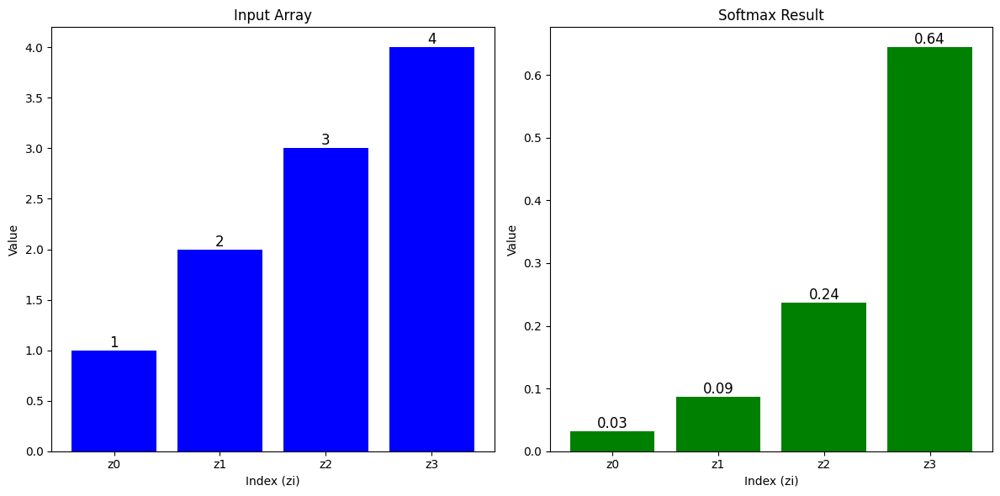
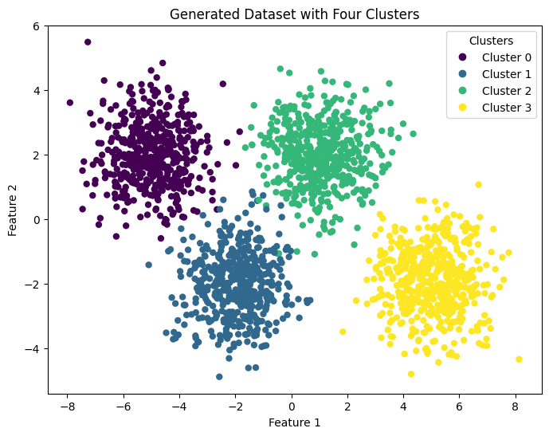

import numpy as np
import pandas as pd
import matplotlib.pyplot as plt
from sklearn.datasets import make_blobs
import math
import tensorflow as tf
from tensorflow.keras.models import Sequential
from tensorflow.keras.layers import Dense
pd.set_option('display.max_columns', None)
pd.set_option('display.max_colwidth', None)Softmax Function
Basic Softmax Function along with an example.
Import Libraries
Function
\[ \large a_j = \frac{e^{z_j}}{ \sum_{k=1}^{N}{e^{z_k} }} \]
def softmax(z):
ez = np.exp(z)
sm = ez/np.sum(ez)
return (sm)Example
input_array = np.array([1, 2, 3, 4])
softmax_result = softmax(input_array)
custom_labels = ['z0', 'z1', 'z2', 'z3']
fig, axs = plt.subplots(1, 2, figsize=(12, 6))
axs[0].bar(np.arange(len(input_array)), input_array,
tick_label=custom_labels, color='b')
axs[0].set_title('Input Array')
axs[0].set_xlabel('Index (zi)')
axs[0].set_ylabel('Value')
for i, v in enumerate(input_array):
axs[0].text(i, v, str(v), ha='center', va='bottom', fontsize=12)
axs[1].bar(np.arange(len(softmax_result)), softmax_result,
tick_label=custom_labels, color='g')
axs[1].set_title('Softmax Result')
axs[1].set_xlabel('Index (zi)')
axs[1].set_ylabel('Value')
for i, v in enumerate(softmax_result):
axs[1].text(i, v, f'{v:.2f}', ha='center', va='bottom', fontsize=12)
plt.tight_layout()
plt.show()
Cost Function
\[ L(\mathbf{a},y)=\begin{cases} -log(a_1), & \text{if $y=1$}.\\ &\vdots\\ -log(a_N), & \text{if $y=N$} \end{cases} \]
\[ J(\mathbf{w},b) = -\frac{1}{m} \left[ \sum_{i=1}^{m} \sum_{j=1}^{N} 1\left\{y^{(i)} == j\right\} \log \frac{e^{z^{(i)}_j}}{\sum_{k=1}^N e^{z^{(i)}_k} }\right] \]
def loss(x, y):
a = softmax(x)
epsilon = 1e-15 # Small constant to avoid taking log(0)
return -math.log(a[y] + epsilon)def cost_fxn(X, y):
m = X.shape[0]
cost = 0
for i in range(m):
cost += loss(X[i], y[i])
cost = cost / m
return costDataset
centers = [[-5, 2], [-2, -2], [1, 2], [5, -2]]
X_train, y_train = make_blobs(
n_samples=2000, centers=centers, cluster_std=1.0, random_state=30)plt.figure(figsize=(8, 6))
scatter = plt.scatter(X_train[:, 0], X_train[:, 1],
c=y_train, cmap='viridis', marker='o', s=25)
legend_labels = [f'Cluster {i}' for i in range(len(centers))]
plt.legend(handles=scatter.legend_elements()[
0], labels=legend_labels, title="Clusters")
plt.title("Generated Dataset with Four Clusters")
plt.xlabel("Feature 1")
plt.ylabel("Feature 2")
plt.show()
Models
model1 = Sequential(
[
Dense(25, activation='relu'),
Dense(15, activation='relu'),
Dense(4, activation='softmax') # <-- softmax activation here
]
)
model1.compile(
loss=tf.keras.losses.SparseCategoricalCrossentropy(),
optimizer=tf.keras.optimizers.Adam(0.001),
)
model1.fit(
X_train, y_train,
epochs=10
)Epoch 1/10
63/63 [==============================] - 1s 2ms/step - loss: 1.0357
Epoch 2/10
63/63 [==============================] - 0s 2ms/step - loss: 0.4241
Epoch 3/10
63/63 [==============================] - 0s 2ms/step - loss: 0.1823
Epoch 4/10
63/63 [==============================] - 0s 3ms/step - loss: 0.0980
Epoch 5/10
63/63 [==============================] - 0s 2ms/step - loss: 0.0683
Epoch 6/10
63/63 [==============================] - 0s 2ms/step - loss: 0.0532
Epoch 7/10
63/63 [==============================] - 0s 2ms/step - loss: 0.0426
Epoch 8/10
63/63 [==============================] - 0s 2ms/step - loss: 0.0369
Epoch 9/10
63/63 [==============================] - 0s 2ms/step - loss: 0.0329
Epoch 10/10
63/63 [==============================] - 0s 2ms/step - loss: 0.0300<keras.src.callbacks.History at 0x1eeea31c040>model2 = Sequential(
[
Dense(25, activation='relu'),
Dense(15, activation='relu'),
Dense(4, activation='linear') # <-- linear activation here
]
)
model2.compile(
loss=tf.keras.losses.SparseCategoricalCrossentropy(
from_logits=True),
optimizer=tf.keras.optimizers.Adam(0.001),
)
model2.fit(
X_train, y_train,
epochs=10
)Epoch 1/10
63/63 [==============================] - 1s 2ms/step - loss: 1.0976
Epoch 2/10
63/63 [==============================] - 0s 2ms/step - loss: 0.4926
Epoch 3/10
63/63 [==============================] - 0s 2ms/step - loss: 0.2572
Epoch 4/10
63/63 [==============================] - 0s 2ms/step - loss: 0.1406
Epoch 5/10
63/63 [==============================] - 0s 2ms/step - loss: 0.0897
Epoch 6/10
63/63 [==============================] - 0s 2ms/step - loss: 0.0672
Epoch 7/10
63/63 [==============================] - 0s 2ms/step - loss: 0.0547
Epoch 8/10
63/63 [==============================] - 0s 3ms/step - loss: 0.0476
Epoch 9/10
63/63 [==============================] - 0s 2ms/step - loss: 0.0422
Epoch 10/10
63/63 [==============================] - 0s 2ms/step - loss: 0.0381<keras.src.callbacks.History at 0x1eeeb1a0ee0>Outputs
p_preferred = model1.predict(X_train)
data = []
for i in range(5):
row = {
'Prediction': p_preferred[i],
'Category': np.argmax(p_preferred[i]),
'Max': np.max(p_preferred[i]),
'Min': np.min(p_preferred[i])
}
data.append(row)
df = pd.DataFrame(data)
print(df)
print("")
y_pred = np.argmax(p_preferred, axis=1)
correct_predictions = np.sum(y_pred == y_train)
total_predictions = len(y_train)
error_percentage = (1 - (correct_predictions / total_predictions)) * 100
print("Error percentage =", error_percentage, "%")63/63 [==============================] - 0s 2ms/step
Prediction Category Max \
0 [0.00076469, 0.0032128657, 0.981888, 0.01413442] 2 0.981888
1 [0.9984345, 0.0015346134, 2.1353391e-05, 9.585833e-06] 0 0.998434
2 [0.9823111, 0.017138032, 0.00038771704, 0.00016316074] 0 0.982311
3 [0.0013412955, 0.99340725, 0.004864373, 0.00038706747] 1 0.993407
4 [0.003443484, 0.00016099671, 0.9962613, 0.00013426131] 2 0.996261
Min
0 0.000765
1 0.000010
2 0.000163
3 0.000387
4 0.000134
Error percentage = 0.8499999999999952 %p_preferred = model2.predict(X_train)
data = []
for i in range(5):
row = {
'Prediction': p_preferred[i],
'Category': np.argmax(p_preferred[i]),
'Max': np.max(p_preferred[i]),
'Min': np.min(p_preferred[i])
}
data.append(row)
df = pd.DataFrame(data)
print(df)
print("")
y_pred = np.argmax(p_preferred, axis=1)
correct_predictions = np.sum(y_pred == y_train)
total_predictions = len(y_train)
error_percentage = (1 - (correct_predictions / total_predictions)) * 100
print("Error percentage =", error_percentage, "%")63/63 [==============================] - 0s 2ms/step
Prediction Category Max \
0 [-4.3254666, 0.14574976, 3.842623, -0.401972] 2 3.842623
1 [6.7959185, 1.1274883, -5.037459, -2.7135649] 0 6.795918
2 [4.8487134, 1.3494179, -3.651421, -2.2844274] 0 4.848713
3 [-2.8908267, 4.823671, -0.023022205, -1.1583089] 1 4.823671
4 [-1.3442385, 0.3332066, 4.854504, -3.0173476] 2 4.854504
Min
0 -4.325467
1 -5.037459
2 -3.651421
3 -2.890827
4 -3.017348
Error percentage = 1.0499999999999954 %